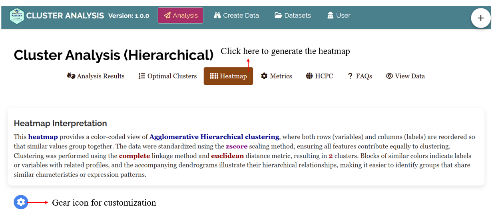
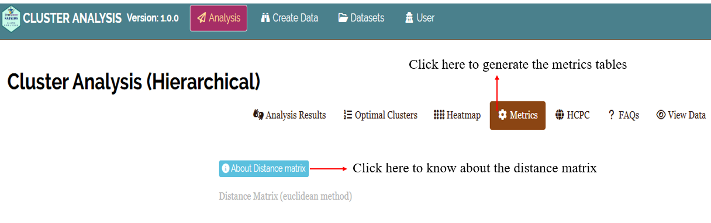

Hierarchical Cluster Analysis in RAISINS
—————1, Dr Pratheesh P Gopinath2
1Statoberry LLP, 2Department of Agricultural Statistics, Kerala Agricultural University,
Hierarchical Cluster Analysis (HCA) is a statistical method used to group similar data points into clusters based on their characteristics, building a tree-like structure to show how these groups form. In RAISINS (R and AI Solutions for INferential Statistics), a web-based platform for statistical analysis, HCA is available in the Analysis module. It’s particularly useful in agricultural research for categorizing genotypes, treatments, or traits by minimizing within-cluster distances and maximizing between-cluster differences. The process starts with individual data points and merges them iteratively into larger clusters, visualized through dendrograms.
Below is a compact, practical guide you can use as a tutorial to perform Hierarchical Cluster Analysis in RAISINS.
How to Prepare Your Data?
Proper data preparation is crucial for accurate HCA results in RAISINS. The platform guides users through preprocessing, but following best practices ensures reliability. What truly matters is the quality of your data! As the saying goes, “garbage in, garbage out” - and this holds true for any software.
To prepare your dataset for analysis in RAISINS, you have two options:
- Create your dataset in MS Excel
- Build your dataset directly within the RAISINS app
Preparing data in MS Excel
RAISINS allows for analyzing multiple characters simultaneously. So you can enter the observations for all characters for a particular set of treatments in a single excel file.
1. Creating a Data File in MS Excel
Open a new microsoft excel file, use single sheet only.
Start with Cell A1: Open a new MS Excel file and begin entering data from cell A1. Do not leave any blank rows above.
First Row - Column Names: The first row must contain the column names.
Column 1: Enter treatment/labels. There should not be any repetition in the label ID’s. If there is replications, you can use the mean values.
From Column 2 Onwards: Enter the names of each character(variable) under study as separate columns (e.g.Murder, Assault, UrbanPop, Rape). You can give any names to the columns.
See Figure 1 showing how the prepared Excel file for upload should look like
2. File Format Recommendation
- In RAISINS you can upload file in xls, xlsx or csv format. But we recommend a csv format as it will be much lighter.
Follow the below steps save your Excel file in csv format.
Open your Excel file.
Click on File in the top-left corner.
Select
Save Asfrom the menu.Choose the location where you want to save the file.
In the Save as type dropdown menu, select
CSV (Comma delimited) (*.csv).Enter a name for your file.
Click Save.
3. Naming Columns and Treatments
Keep It Simple and Straight (KISS): Use simple and short names for column headers.
Avoid Complexity: Do not include units, special characters, or spaces in names (e.g., use char1 instead of Character 1). This helps ensure the names appear neatly in plots and outputs.
This helps ensure the names appear neatly in plots and outputs.
Dataset Creation Rules
- Column Naming Convention
- No spaces allowed in column names.
- Use underscores (
_) or full stops (.) for separation. - Avoid symbols and special characters like %,# etc
- No spaces allowed in column names.
- Data Arrangement
- Start data arrangement towards the upper-left corner.
- Ensure the row above the data is not blank.
- Start data arrangement towards the upper-left corner.
- Cell Management
- Avoid typing or deleting in cells without data.
- If needed, select affected cells, right-click, and select Clear Contents.
- Avoid typing or deleting in cells without data.
- Column Relevance
- Name all columns meaningfully.
- Exclude unnecessary columns not required for analysis.
- Name all columns meaningfully.
4. Creating Data Using the App (Recommended Method)
Navigate to
Create DataTab: Click on the Create Dataset tab in the main menu at the top of the app.Specify Details: Enter the levels of Factor A, Factor B, Factor C and number of characters under study in the window that opens.
Then click
createModel Data Entry File: A template for data entry will be generated. You can:
Directly enter your data into this template.
Or, copy-paste data from an existing Excel file.
Download as CSV: Once the data is entered, click on the
Download CSVFile button. The downloaded CSV file can be uploaded for analysis inAnalysis tab.
How to upload the data file for analysis ?
Upload the Prepared CSV/XLS File: Go to the
Analysis tab(See Figure 2) and upload your prepared data file.Ensure Clean Data: Keep the file focused on the data; avoid adding any extra information or notes outside the data area.
By following these instructions, you will have a well-prepared data file ready for analysis, allowing you to process multiple characters together

Different plot types and additional options
A dendrogram is a tree-like diagram that visually represents how hierarchical clustering groups data step by step, allowing you to explore relationships and cluster formation within a dataset. A dendrogram displays the process of merging (or sometimes splitting) clusters during hierarchical cluster analysis.
Step-by-Step: How to read a Dendrogram ?
Start at the bottom - Each leaf represents a single observation or sample.
Follow the lines upward - The first merges connect the most similar items. These connections indicate that the points or small clusters joined are very close based on the chosen similarity measure.
Merging clusters - As you go higher, clusters are combined with others, and each branching indicates additional clustering - think of it as building a family tree for your data.
Branch heights - The height at which branches merge tells you how similar the merged groups are-the lower the connection, the more similar the groups.
Deciding number of clusters - By “cutting” the tree horizontally at a given level (distance threshold), you divide the data into clusters-each branch below the cut line forms a cluster.
RAISINS is designed for a smooth and hassle-free experience. Once you click the Run Analysis button, all relevant results and outputs appear instantly-leaving no room for confusion. We’ve ensured that every possible dendrogram related to the Hierarchical Cluster analysis is readily available. Color-Coded Clusters dendrogram performed with the complete linkage method and euclidean distance metric, identified through elbow method, resulting in 2 clusters is available by default and each dendrogram comes with a gear icon at the top-left corner, allowing you to customize its appearance. You can also download these plots in high-quality PNG (300 dpi), TIFF or PDF formats for use in reports or presentations.
Explore Figure 3, Figure 4, Figure 5, Figure 6, Figure 7, Figure 8, Figure 9, Figure 10 where each dendrogram available in RAISINS is visually illustrated and accompanied by a clear, insightful description below, helping you easily understand the structure and meaning of each clustering pattern.

A color-coded cluster dendrogram is an enhanced version of the basic dendrogram where branches or clusters are colored differently to clearly distinguish the groupings formed by hierarchical clustering. This makes interpreting the tree much easier, especially for large datasets or when clusters overlap visually.

A vertical dendrogram is a classic, user-friendly way to display hierarchical clustering results with the data points along the bottom and cluster merges represented by upward vertical lines, enabling easy interpretation of cluster hierarchy and distances.

A horizontal dendrogram is a tree-like diagram used to visualize hierarchical clustering results where the structure extends horizontally rather than vertically. In this layout, the individual observations or samples appear along the vertical axis, and the branches stretch left to right, representing how clusters merge step-by-step based on dissimilarity or distance.

Ward’s linkage is a hierarchical clustering method focused on minimizing the increase in total within-cluster variance (or error sum of squares) when merging clusters. It is widely used because it tends to produce compact, spherical clusters, making it popular in many applications like biological data, market segmentation, and more.

Rectangular clusters are simply the visual aids drawn as boxes around groups of points identified as clusters on dendrograms or heat maps to facilitate clear, intuitive interpretation of cluster structure in hierarchical clustering outputs.

A Circular Dendrogram is a radial, space-efficient alternative to the classical dendrogram, arranging hierarchical cluster branches in concentric circles around a center. It enhances visual clarity for large or complex datasets by providing a 360-degree view of similarity and cluster structures, making it a valuable tool for hierarchical data visualization.
A coloured rectangular dendrogram is an enhanced dendrogram visualization where clusters are not only enclosed in rectangular boxes but these boxes and the associated branches are also color-coded to clearly distinguish different clusters. This combination improves interpretability and presentation of hierarchical clustering. results.
In addition to the various plot types available in RAISINS, the platform also provides several customization options to refine your clustering analysis.
You can explore and adjust the following settings:
- Linkage Methods available in RAISINS - single, complete, average, ward.D2, mcquitty, median and centroid.
Lets understand the different linkage methods
Single linkage defines the distance between two clusters as the minimum distance between any pair of points, one from each cluster. This approach often produces elongated, chain-like clusters because it merges clusters based on the closest individual pair of points. It is sensitive to noise and outliers, as a single close pair can link otherwise distant clusters.
Complete linkage measures the distance between two clusters as the maximum distance between any point in one cluster and any point in the other cluster. This method tends to produce more compact and spherical clusters by enforcing that all members within a cluster are close to each other. It is less sensitive to outliers compared to single linkage.
Average linkage computes the clustering distance as the average of all pairwise distances between members of the two clusters. It balances the tendency of single and complete linkage, typically yielding clusters that are more balanced in shape and size by considering all members evenly.
Ward’s linkage merges clusters such that the increase in total within-cluster variance is minimized. It uses a variance-minimizing criterion based on squared Euclidean distances and tends to produce compact, spherical clusters. Ward.D2 specifically refers to Ward’s method with squared distances, popular for its stable and interpretable clusters.
This method uses a simple average of distances weighted by cluster sizes when merging clusters. It’s a variant of average linkage and provides a compromise that accounts for different cluster sizes during the merge.
Median linkage calculates the distance between clusters based on the median of the points within each cluster (cluster median) rather than the mean. This method can be more robust to skewed data distributions but may result in non-monotonic clustering (reversals) in dendrograms.
Centroid linkage computes the distance between two clusters as the Euclidean distance between their centroids (mean vectors). It effectively merges clusters based on the center of mass but may produce inversions (discontinuities) in the dendrogram if the merging decreases cluster distances temporarily..
- Distance Metrics available in RAISINS: Euclidean, Manhattan, Maximum, Canberra, Minkowski.
Lets understand the different Distance Metrics
Euclidean distance is the most familiar form of distance measurement, representing the straight-line distance between two points in Euclidean space. It is calculated using the Pythagorean theorem, where the distance between two points is the square root of the sum of the squared differences across all dimensions. For example, in a two-dimensional space, the distance between points (x₁, y₁) and (x₂, y₂) is given by the formula √((x₂ − x₁)² + (y₂ − y₁)²). This metric measures the shortest path between points, like stretching a string tight between two points on a map, making it widely used in machine learning, such as clustering and classification algorithms.
Manhattan distance, also known as city block distance, sums the absolute differences of the coordinates between two points in a grid-like path. Unlike Euclidean distance, which measures the shortest “as-the-crow-flies” route, Manhattan distance measures how far apart two points are if you can only move along grid lines—like navigating city streets laid out in a grid pattern. For example, the distance between (x₁, y₁) and (x₂, y₂) is |x₂ − x₁| + |y₂ − y₁|, often used in urban planning and in applications where movement is restricted to axes-aligned paths.
Maximum distance, also known as Chebyshev distance, considers the greatest absolute difference among all coordinate pairs between two points. It effectively measures how far apart two points are in terms of the most significant coordinate difference. Mathematically, for points (x₁, y₁) and (x₂, y₂), it is max(|x₂ − x₁|, |y₂ − y₁|). This metric is useful in chess (king’s move), robotics (max step size), and in certain clustering methods, where the largest coordinate gap dominates the distance calculation.
Canberra distance is a weighted version of difference measurement that emphasizes smaller differences, especially when values are close to zero. It is calculated as the sum of the ratios |x₂ − x₁| / (|x₂| + |x₁|) across all dimensions. Because it gives more weight to differences when values are small, it is effective for datasets with many small or sparse values, often used in bioinformatics, economics, and fields dealing with relative differences.
Minkowski distance is a generalization of Euclidean and Manhattan distances, characterized by a parameter p, called the order. When p=1, Minkowski becomes Manhattan distance; when p=2, it becomes Euclidean distance. For other values of p, it defines a different form of distance calculation, where higher p emphasizes larger differences more heavily, and lower p emphasizes smaller differences. The formula involves taking the p-th root of the sum of the absolute differences raised to the power p across all dimensions, making it very flexible for various applications.
Median distance refers to the measure of the difference between data points based on their median values; it is more robust to outliers in skewed data distributions. Centroid distance specifically considers the Euclidean distance between the centroids (mean points) of data clusters. The centroid-based method is widely used in clustering techniques like k-means because it measures the central point of a cluster, making it useful for cluster center-based algorithms but sensitive to outliers, which can shift the centroid.
- Optimal k Methods available in RAISINS : Elbow, Silhouette, Gap Statistic
Lets understand the different optimal k Methods
The elbow method is a heuristic used in clustering analysis, particularly with K-means, to determine the optimal number of clusters. It involves plotting the within-cluster sum of squares (WCSS) against different values of k (number of clusters). As the number of clusters increases, WCSS decreases because the data points within each cluster become more tightly grouped. The goal is to identify the “elbow” point in the plot where the rate of decrease sharply changes, indicating an optimal balance between minimizing intra-cluster variance and avoiding overfitting. This point suggests the most appropriate number of clusters, where adding more clusters yields diminishing improvements.
The Silhouette method measures how similar an object is to its own cluster compared to other clusters. For each data point, the Silhouette score ranges from -1 to 1, with higher scores indicating better clustering (points are closer to members of their own cluster than to other clusters). The average silhouette score across all points for different cluster numbers helps identify the optimal k: the higher the average score, the better the clustering. This method considers both cohesion within clusters and separation between clusters, providing a more nuanced evaluation of clustering quality than solely looking at variance.
The Gap Statistic compares the total within-cluster dispersion for different k values with their expected dispersion under a null reference distribution (usually a uniform distribution of points). It calculates the gap between the observed clustering and the expected clustering under randomness: a larger gap indicates more meaningful, well-separated clusters. The optimal number of clusters is the one where the gap statistic reaches its maximum, suggesting that the clustering structure differs significantly from random noise. This method is robust but more computationally intensive, as it involves generating multiple reference datasets for comparison.
- Scaling Options available in raisins: zscore, center, minmax, unitlength, robust, none
Lets understand the different scaling options
Z-score normalization, also known as standardization, transforms data so that it has a mean of 0 and a standard deviation of 1. This method computes the Z-score for each data point by subtracting the dataset’s mean (μ) and dividing by its standard deviation (σ). The resulting scaled data indicates how many standard deviations each point is from the mean. It is particularly useful for datasets with roughly normal distributions and algorithms that assume normality, such as linear regression or SVM, as it removes scale bias and enhances comparability across features.
Centering data refers to subtracting the mean of a feature from each data point, effectively shifting the data so the mean becomes zero without changing the data’s variance or distribution shape. This operation is fundamental to many data preprocessing steps, such as Z-score normalization, and helps algorithms interpret features more straightforwardly by aligning data around a common point, making the analysis less affected by location shifts.
Min-Max scaling rescales data to a fixed range, typically. It adjusts each feature by subtracting the minimum value and dividing by the range (max - min), effectively compressing all data within the specified bounds. This technique preserves the original distribution but is highly sensitive to outliers, which can distort the scaled values by expanding the range. Min-Max normalization is often used in neural networks and gradient-based algorithms where feature bounds matter.
Unit length scaling normalizes each data sample (or feature vector) so that its total length (or Euclidean norm) equals 1. This is achieved by dividing each vector by its magnitude, which is the square root of the sum of squared components. It’s commonly used in text analysis (e.g., TF-IDF vectors) and machine learning algorithms that rely on cosine similarity, as it ensures all vectors are on the same scale, emphasizing direction over magnitude.
Robust scaling uses statistics less sensitive to outliers, typically by subtracting the median and dividing by the interquartile range (IQR). This method centers the data around the median and scales it according to the spread of the middle 50% of data points, making it effective when dealing with noisy data or datasets with extreme outliers. Its primary goal is to produce scaled data that reflects the true distribution of the bulk of the data without being skewed by outliers.
- Number of Clusters: Specify or adjust the number of clusters to be formed based on your analysis needs.
Heatmap in RAISINS
A heatmap in cluster analysis is a visualization technique that represents data values in a matrix format using colors to indicate magnitude, typically after both the rows and columns have been reordered based on hierarchical clustering results. The integration of heatmaps with cluster analysis allows you to visually explore and identify patterns, groupings, or similarities among observations (rows) and variables (columns).
In the RAISINS platform after uploading your data click on the Heatmap tab to generate the heatmap and you can use the gear icon to customize your heatmap (See Figure 11) By default the data are standardized using the zscore scaling method, ensuring all features contribute equally to clustering, which was performed using the complete linkage method and euclidean distance metric, resulting in 2 clusters.You can also download the heatmapin high-quality PNG (300 dpi), TIFF or PDF formats for use in reports or presentations.

See Figure 12 where blocks of similar colors indicate labels or variables with related profiles, and the accompanying dendrograms illustrate their hierarchical relationships, making it easier to identify groups that share similar characteristics or expression patterns.

The four important statistical components available in RAISINS
In the RAISINS platform after uploading your data select the labels then select the clustering variables of your choice, then click on Run Analysis and go to Metrics (See Figure 13) to generate Distance matrix, Cluster-wise means, Intra-cluster Statistics and Inter-cluster Statistics tables and you can either copy this file or download these tables in .xlsx or .csv formats for use in reports or presentations.

Below given is a brief description on the four statistical components available in RAISINS
- Distance Matrix (euclidean method) - See Figure 14

In hierarchical clustering, the distance matrix represents the pairwise dissimilarities or distances between all observations in the dataset. It quantifies how similar or different each observation is from every other observation and serves as the foundation for grouping observations into clusters. The distance matrix provides a reference for understanding the relative closeness of observations and guides the formation of clusters based on similarity.
- Cluster means - See Figure 15

In hierarchical clustering, the cluster mean represents the average values of all variables for the observations within a cluster, summarizing the central tendency of the cluster and providing a reference point to understand the characteristics of the grouped data. It represents the typical characteristics of that cluster.
- Intra-cluster Statistics - See Figure 16

In hierarchical clustering, intra-cluster statistics measure the compactness or similarity of observations within the same cluster. They quantify how closely the members of a cluster resemble each other, often using metrics like the average distance between observations and the cluster mean. These statistics help assess the cohesion of a cluster, indicating how homogeneous or tightly grouped the cluster members are.
- Inter-cluster Statistics - See Figure 17

In hierarchical clustering, inter-cluster statistics measure the separation or dissimilarity between different clusters. They quantify how distinct or far apart the clusters are from each other, often using metrics like the distance between cluster means or centroids. These statistics help assess the distinctness of clusters, indicating how well the clustering algorithm has separated different groups in the dataset.
HCPC (Hierarchical Clustering on Principal Components)
Hierarchical clustering on principal components (HCPC) is a hybrid approach that combines the strengths of principal component analysis (PCA) and hierarchical clustering. PCA first reduces the dimensionality of the dataset by summarizing correlated variables into a smaller set of uncorrelated components that retain most of the original variance. Then, hierarchical clustering is performed on these principal components instead of the raw variables, which enhances the separation of clusters and reduces noise caused by variable correlations. This method is particularly useful for visualizing and identifying meaningful groupings in complex multivariate datasets, as it simplifies interpretation while preserving the main structure of the data.
When to use HCPC ?
When you have a large dataset with many continuous variables and want to reduce dimensionality before clustering to improve interpretability and cluster quality.
When your dataset contains categorical variables, multiple correspondence analysis (MCA) or factor analysis can transform them into continuous principal components suitable for clustering.
When original variables are correlated or noisy, HCPC clusters on principal components that summarize the main variance structure and filter noise, leading to more meaningful and stable clusters.
When you want an integrated approach combining principal component analysis for dimensionality reduction, hierarchical clustering for initial cluster identification, and k-means clustering for refinement.
When exploring multivariate data for identifying natural groupings, patterns, or clusters with clearer separation and visual representation (e.g., factor maps, chord diagrams).
When the goal is simplifying complex multivariate data for easier interpretation and presentation in reports or scientific communication.
Difference between HCPC and classical HCA
HCPC applies Principal Component Analysis (PCA) first to reduce data dimensionality before clustering; HCA clusters directly on the original variables.
HCPC clusters the uncorrelated principal components that represent the main variance structure, filtering noise and redundancy; HCA uses raw data and can be influenced by correlated variables.
HCPC integrates PCA, hierarchical clustering, and k-means clustering to improve cluster stability and quality; HCA only involves hierarchical clustering.
HCPC is designed for complex, high-dimensional, or mixed-type datasets; HCA is suitable for simpler, low-dimensional data.
HCPC produces enhanced visualizations like factor maps and chord diagrams for better cluster interpretation; HCA mainly produces dendrograms based on distances.
HCPC requires additional computational steps but offers more robust and interpretable clusters; HCA is simpler and faster but may lead to less meaningful clusters in complex data.
In the RAISINS platform after uploading your data select the labels then select the clustering variables of your choice, then click on Run Analysis and go to HCPC to generate Factor map, Chord diagram and Chord diagram - Cluster means which are downloadable in PNG, TIFF or PDF formats with interpretation and tables. The tables can be either copied or downloaded in .xlsx or .csv formats for use in reports or presentations.


In the Figure 18 the Factor map displays the results of Hierarchical Clustering on Principal Components (HCPC), where observations are grouped into distinct clusters based on their similarity across all variables. The plot is constructed in a reduced two-dimensional space using the first two principal components (Dim1 and Dim2), which capture the maximum variance in the data while preserving the essential structure of the original multidimensional dataset. Each cluster is represented by a different color and enclosed in a convex hull (shaded polygon), making it easy to visually distinguish between groups. Observations within the same cluster share similar characteristics across the measured variables, while observations in different clusters exhibit distinct patterns or profiles. The percentages shown on each axis indicate how much of the total variance in the data is explained by that dimension - higher percentages mean that dimension captures more information about the differences between observations. The spatial separation between clusters reflects how different they are: clusters that are far apart have very different profiles, while clusters that are closer together are more similar. Overlapping regions suggest some ambiguity in cluster boundaries, where observations share characteristics with multiple groups. The position of each observation (data point label) within the plot is determined by its scores on the principal components, allowing you to see not only which cluster each observation belongs to but also how it relates to other observations within and across clusters. This visualization helps identify natural groupings in your data, understand the relationships between observations, and assess the quality of the clustering by examining how well-separated and cohesive the clusters appear in the reduced dimensional space

In Figure 21, the table shows the top contributing variables for each cluster based on the v.test statistic from the HCPC analysis. For each cluster, the five variables with the highest absolute v.test values are displayed. ‘Mean in category’ and ‘sd in category’ show the standardized mean and standard deviation within the cluster, while ‘Overall mean’ and ‘Overall sd’ provide reference values across all data. The p.value indicates the statistical significance of the variable’s contribution. Variables with higher absolute v.test values and lower p.values are more important in defining the cluster.
In Figure 19, the chord diagram visualizes the relationships between your original variables and the identified clusters from Hierarchical Clustering on Principal Components (HCPC). The outer ring shows two types of segments: your original dataset variables and the clusters (groups of similar observations). The ribbons connecting them represent the strength of association, with wider ribbons indicating that a variable is more characteristic or defining for that particular cluster. The width is determined by v.test statistics, which measure how strongly a variable distinguishes each cluster from others. By examining these connections, you can understand the profile of each cluster - which variables are most prominent in defining each group. Variables with thick ribbons to a cluster are key features of that group, while variables connected to multiple clusters play important roles across different groups. The diagram displays the most characteristic variables for each cluster with weights normalized within each cluster, allowing you to compare the relative importance of variables in defining cluster identities and understand what makes each group unique in your dataset.

In Figure 22, the table summarizes the results of Principal Component Analysis (PCA), showing how much variance each principal component explains in the dataset. The eigenvalue indicates the amount of variance captured by each component, with larger values representing more important components. The percent column shows the proportion of total variance explained by each component, while the cumulative percent shows the running total across components. Components with eigenvalues greater than 1 are typically considered meaningful. This information helps determine how many components are needed to adequately represent the original data and forms the basis for subsequent clustering analysis.

In Figure 23, the table summarizes the variance in the dataset with respect to clustering. Total Sum of Squares (Total_SS) represents the overall variability in the data. Within-Cluster Sum of Squares (Within_SS) measures variability of observations inside each cluster. Between-Cluster Sum of Squares (Between_SS) quantifies variability between cluster centers. The Between/Total Ratio indicates the proportion of total variance explained by the differences between clusters. Higher ratios mean better separation between clusters.